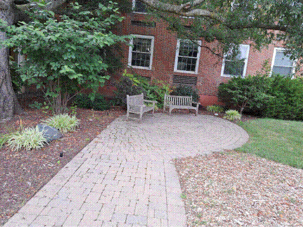

Some time ago, I was sitting on a bench outside the University of Maryland mathematics building. I turned to a sparrow beside me, and asked, ``What is the deal with homotopy colimits?''
He looked me in the eyes, defecated on the bench, and flew off. In this moment, I understood the construction of homotopy categories.The sparrow's name? Rodoljub Milenković.
